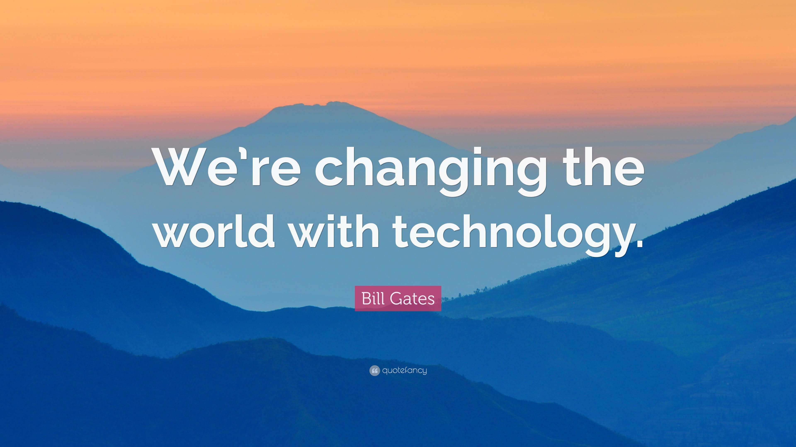

“If future generations are to remember us more with gratitude than sorrow, we must achieve more than just the miracles of technology. We must also leave them a glimpse of the world as it was created, not just as it looked when we got through with it.”
Lyndon B. Johnson, Former President of the United States of America
Engage Your Community
Search and retrieve
Search boards, posts, members and even chat conversation
Retrieve posts by searching keywords in the post title, description or attached file name.
Explore and participate in interesting posts or boards that are open to the public